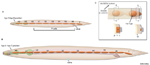
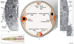
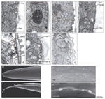
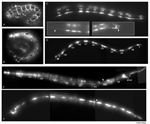
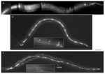

Handbook - Hermaphrodite
Epithelial System Seam Cells see also Hypodermis Interfacial Cells Atypical Cells
3 Post-embryonic development of the seam cells
Figures  SeamFIG 1 - Seam is composed of a longitudinal string of cells  SeamFIG 2 - Seam cells are embedded in hypodermis  SeamFIG 3 - Seam cells make special cuticular structures called alae  SeamFIG 4A-F - Development of the seam  SeamFIG 4G-I -Development of the seam